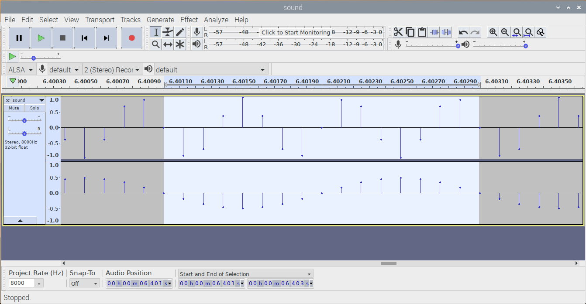

wav声音PCM数据分析
通过wav文件了解PCM数据
steps
apt-cache search audacity
audacity - fast, cross-platform audio editor audacity-data - fast, cross-platform audio editor (data) debian-edu-doc-en - English documentation from the Debian Edu project debian-edu-doc-fr - French documentation from the Debian Edu project debian-edu-doc-nb - Bokmål documentation from the Debian Edu project debian-edu-doc-nl - Dutch documentation from the Debian Edu project debian-edu-doc-zh - Chinese documentation from the Debian Edu project forensics-extra-gui - Forensics Environment - extra GUI components (metapackage) silan - commandline tool to detect silence in audio-files vamp-plugin-sdk - audio analysis and feature extraction plugins (SDK)
sudo apt-get install audacity
-
make
设置为耳机输出声音，注意关闭远程桌面进行设置：sudo raspi-config
System Options
Audio
0 Headphones
./wavfile
sound.wav
声音有点难受
aplay sound.wav
远程桌面打开：audacity
sound.wav
